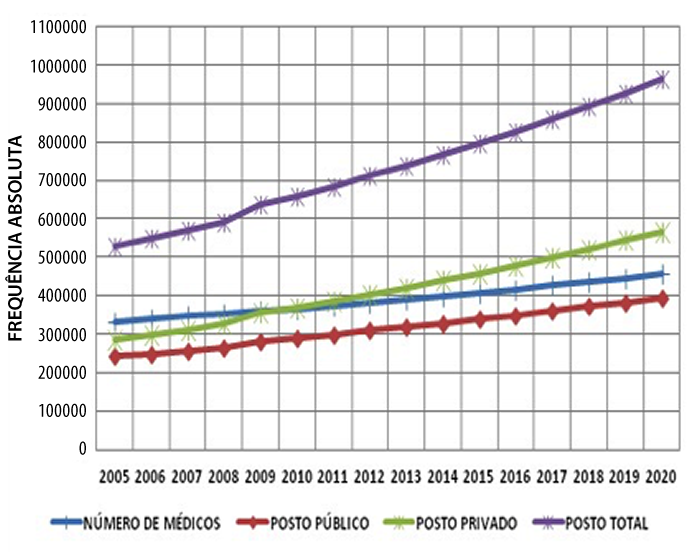

Dissertativas
Análise pedagógica das questões dissertativas
Introdução
Os alunos que fizeram o simulado em referência resolveram três questões de respostas construídas por eles. Trata-se da elaboração de textos até no máximo 15 linhas sobre o problema proposto em cada questão.
Na questão 61 é apresentado um case para o aluno discutir a atitude ética a ser tomada pelo médico; portanto, requer dele conhecimentos gerais sobre o Código de Ética Médica.
A questão 62 A segunda pede basicamente o conceito da medicina baseada em evidências
A questão 63 requer uma leitura atenta de uma tabela e de um gráfico, cujos dados e informações devem ser utilizados na resolução do problema proposto.
O critério de correção da questão envolveu três aspectos:
| nº | critério de correção | valor |
|---|---|---|
| I | Uso correto da língua portuguesa | 0,15 |
| II | Raciocínio exposto corretamente (coesão) | (0,15) |
| III | Resposta correta ao problema proposto | (0,70) |
Resultados
Os resultados da correção mostram um desempenho muito bom da grande maioria dos alunos no que se refere aos itens I e II da grade de correção. Ou seja, os alunos mostram uma redação correta do ponto de vista gramatical e coesão. Os pouquíssimos erros cometidos prendem-se à pontuação (vírgula), uso da partícula reflexiva se nos verbos, e crase.
A tabela a seguir mostra um resumo desse desempenho:
| Frequência dos pontos obtidos com a grade de correção, considerando os alunos do 2º ano (55 alunos) | |||
|---|---|---|---|
| Pontos Obtidos | Q61 | Q62 | Q63 |
| 0 | 4 | 8 | 4 |
| 0,1 - 0,2 | 0 | 4 | 0 |
| 0,3 - 0,35 | 7 | 7 | 0 |
| 0,4 - 0,45 | 7 | 7 | 2 |
| 0,5 - 0,55 | 8 | 7 | 0 |
| 0,6 - 0,65 | 6 | 8 | 5 |
| 0,7 - 0,75 | 4 | 9 | 7 |
| 0,8 - 0,9 | 6 | 5 | 8 |
| 1 | 13 | 0 | 29 |
| TOTAL | 55 | 55 | 55 |
A correção mostrou que a grande maioria das pontuações 0,3 está relacionada aos alunos que não resolveram corretamente o problema proposto, mas apresentaram uma redação coesa e correta do ponto de vista gramatical.
As notas variando entre 0,4 e 0,9 mostram na correção, novamente, um grande número de redações coesas e corretas com alguns aspectos positivos na resolução do problema, isto é, solução do problema parcialmente apresentada.
A correção mostra também que as soluções incorretas dos problemas propostos possivelmente deveu-se a:
- Uma leitura incorreta do case (Q61)
- Conceitos errados (Q62)
- Leitura desatenta do gráficos e tabela e compreensão do problema proposto (Q63).
Ainda na questão 63, muitos alunos referem-se às más condições da saúde pública brasileira associada por exemplo à má formação dos médicos, o que não pode ser deduzido do gráfico e da tabela. Os erros conceituais sobre “Medicina Baseada em Evidências” precisam ser corrigidos.
Vale destacar que, em toda prova, questões objetivas e dissertativas, os resultados pouco diferem se incluirmos aos alunos do 2º ano, aqueles que estão no 1º ano e fizeram o simulado.
Item 61
Os pais de Maria, uma menina de 3 anos, levam-na ao pronto socorro infantil porque apresenta dificuldade respiratória. Sua mãe informa que há dois dias Maria tem febre, tosse, muitos “ruídos” no peito e que o catarro quase provoca afogamento. Ela conta ainda, que Maria tem uma doença degenerativa, diagnosticada quando a criança tinha 1 ano. Já apresentou episódios semelhantes que puderam ser cuidados em casa, mas desta vez é mais grave. A criança está febril, pálida, com cianoses peri-oral e saturação de oxigênio de 87%. O médico pode ainda perceber que Maria é uma criança desconectada do meio, com severo comprometimento do desenvolvimento psicomotor e hipertonia generalizada. A radiografia de tórax mostra condensação direita e os resultados de exames laboratoriais são compatíveis com infecção bacteriana. Em caráter de urgência, se aspiram as secreções e dão oxigênio por máscara. O médico diz aos pais que podem levar Maria para casa, lhes entrega uma receita de antibiótico, e marca uma consulta para outra drenagem de secreções intrabrônquicas. Informa ainda que, dada a condição básica de Maria, não é recomendável hospitalizá-la, já que não tem possibilidade de sobrevida e, neste caso, segundo ele, o melhor é que Maria esteja com a família até o final. Os pais insistem que não possuem os recursos necessários para cuidar da filha em casa, que lutaram muito por ela, conhecem bem sua doença, e que se é o final da sua vida não querem vê-la sofrer, visto que, com pouca ajuda de enfermeiras, ela mostra melhora das suas dificuldades respiratórias.
No caso de Maria, o problema que está posto não é a decisão técnica de qual antibiótico é o mais adequado, mas surgem questões mais complexas como: é lícito limitar o esforço terapêutico nesta paciente? Até onde chegar com o tratamento? O médico deve usar todos os recursos e a qualquer custo?
Em no máximo 15 linhas discuta esse problema ético, sob o juízo de proporcionalidade. Se esse juízo for favorável à restrição de ações terapêuticas, discuta o curso que os cuidados devem seguir.
Em pacientes com características clínicas de Maria, o médico deve decidir se terapêutica utiliza todas as ferramentas disponíveis para lidar com a patologia da criança ou, dadas as características clínicas, se é necessário restringir as terapias. No entanto, esta decisão requer um juízo de proporcionalidade, que inclui a participação do paciente, neste caso representados por seus pais. Na decisão de um juízo proporcional ou não mensurável, nestes casos, é de grande importância a relação médico-paciente, especialmente com o médico de Maria, pois trata -se de crianças com doenças de curso crônico e variável, às vezes único. Por este motivo, seria aconselhável entrar em contato com o médico de Maria. As doenças neuro-degenerativas são naturalmente de natureza crônica progressiva, caracterizada pela parada súbita ou, o tempo de desenvolvimento psicomotor é lento associado à regressão das competências adquiridas e início dos sinais e sintomas neurológicos.
A evolução natural leva à morte da criança em um período de tempo variável. A maior parte do tempo a morte ocorre por patologia intercorrente, e não pela doença subjacente. É importante saber o curso natural de cada e suas características clínicas, de modo a identificar claramente o estágio que estão no momento da avaliação. O fato de descobrir que uma criança tem uma doença características neuro-degenerativas, não a classifica automaticamente como doente terminal e não se justifica a priori limitar o esforço terapêutico. Uma vez feito o julgamento de proporcionalidade, e decidido restringir o esforço terapêutico, a obrigação moral com o paciente não termina com esta decisão. Eventualmente, se Maria é declarada doente terminal, pelo o princípio do não-abandono o médico deve se encarregar dos cuidados paliativos e acompanhar Maria e sua família nesta fase da doença. Embora a avaliação do custo da execução da medida é parte dos elementos a serem considerados no julgamento da proporcionalidade, a obrigação de implementar uma medida proporcional e, assim, proteger a saúde e a vida é uma prioridade.
Finalmente, também é importante lembrar a obrigação dos médicos quanto ao respeito que devem dar ao processo da morte da pessoa sob seus cuidados
Item 62
Em no máximo 15 linhas descreva o comportamento de um médico que faz medicina baseada em evidência a partir de um caso possivelmente real (um exemplo criado por você)
Alguns tópicos que o aluno pode abordar:
- A medicina baseada em evidências (MBE) é definida como o elo entre a boa pesquisa científica e a prática clínica. Em outras palavras, a MBE utiliza provas científicas existentes e disponíveis no momento, com boa validade interna e externa, para a aplicação de seus resultados na prática clínica.
- Medicina Baseada em evidências é a prática de tomar decisões individualizadas, norteando-se por conceitos científicos.
- Quando abordamos o tratamento e falamos em evidências, referimo-nos à efetividade, à eficiência, à eficácia e à segurança. A efetividade diz respeito ao tratamento que funciona em condições do mundo real. A eficiência diz respeito ao tratamento barato e acessível para que os pacientes possam dele usufruir. Referimo-nos à eficácia quando o tratamento funciona em condições de mundo ideal. E, por último, a segurança significa que uma intervenção possui características confiáveis que tornam improvável a ocorrência de algum efeito indesejável para o paciente.
- A MBE é uma ferramenta para melhorar as habilidades médicas da atual prática clínica, com a contribuição da literatura médica e dos avanços tecnológicos diários.
- É necessário entender a patofisiologia fundamental, para a interpretação das observações clínicas e para a aplicação e interpretação adequada dos resultados da evidência, especialmente na decisão da representatividade dos resultados para a prática clínica (Generalização).
- O levantamento cuidadoso do histórico médico e a realização do exame físico fornece muitas evidências.
- Diversos níveis de evidência podem dar suporte a cada aspecto de produtos e procedimentos, para fornecer aos médicos, profissionais da saúde e tomadores de decisão, os argumentos de seu uso adequado, melhorando assim a prática clínica.
Exemplo: um estudo randomizado e controlado não é o mesmo que a opinião de especialista. - O nível de evidência varia dependendo da metodologia do estudo clínico.
Item 63
Os dados apresentados na tabela e no gráfico a seguir refletem, em parte, a situação da saúde pública no Brasil, com possíveis conclusões a partir dos resultados de estudos de projeção para 2020.
Projeções de médico/habitante em unidades da federação para o ano de 2020 |
|||
|---|---|---|---|
| Estado | Razão Méd./Hab. 2010 | Médicos 2020 | Razão Méd./Hab. 2020‡ |
| Maranhão | 0.65 | 6.778 | 0.93 |
| Pará | 0.81 | 8.813 | 0.98 |
| Acre | 0.89 | 917 | 1.02 |
| Amapá | 1.00 | 965 | 1.09 |
| Piauí | 1.00 | 4.698 | 1.40 |
| Alagoas | 1.04 | 4.833 | 1.42 |
| Paraíba | 1.08 | 6.408 | 1.57 |
| Ceará | 1.10 | 14.265 | 1.58 |
| Tocantins | 1.15 | 2.620 | 1.61 |
| Bahia | 1.17 | 24.036 | 1.69 |
| Rio G Norte | 1.21 | 6.013 | 1.71 |
| Pernambuco | 1.22 | 15.919 | 1.73 |
| Amazonas | 1.26 | 7.500 | 1.88 |
| Sergipe | 1.30 | 4.392 | 1.89 |
| Mato Gros | 1.33 | 6.633 | 1.90 |
| Rondônia | 1.33 | 3.561 | 2.08 |
| Goiás | 1.46 | 15.927 | 2.33 |
| Roraima | 1.52 | 1.311 | 2.35 |
| Mato G Sul | 1.62 | 6.721 | 2.42 |
| Paraná | 1.80 | 27.657 | 2.51 |
| Min. Gerais | 1.84 | 53.289 | 2.60 |
| Rio G Sul | 1.93 | 30.497 | 2.78 |
| Esp. Santo | 2.06 | 10.592 | 2.85 |
| S Catarina | 2.31 | 20.483 | 2.87 |
| São Paulo | 2.59 | 142.425 | 3.31 |
| R Janeiro | 3.65 | 71.160 | 4.44 |
| D Federal | 4.03 | 16.483 | 5.54 |
Projeção para a relação de postos de trabalho médico ocupados nos setores público e privado, 2010 - 2020.
(2005 a 2010: dados observados; 2011 a 2020: dados projetados pelo estudo)
Fonte: Demografia Médica no Brasil. Estudo de Projeção - Concentração de Médicos no Brasil em 2020. Conselho Federal de Medicina (CFM) e Conselho Regional de Medicina do Estado de São Paulo (Cremesp). 2015. http://portal.cfm.org.br/ - consultado em 10 setembro 2016.
Justifique, em no máximo 15 linhas, e mencionando dados do gráfico e da tabela, a opinião de muitos especialistas que afirmam que apenas o aumento de escolas de medicina não melhora a situação da saúde pública do Brasil.
O aluno não pode deixar de observar que a distribuição dos médicos pelo território nacional continua evidenciando desigualdade (tabela), com índices abaixo do preconizado pela OMS, mesmo com o aumento do número de médicos no Brasil (gráfico): Em 2020 o estudo projeta a mesma situação de hoje – no que se refere aos estados, na coluna 1, do Maranhão até e incluindo Mato Grosso. Os postos de trabalho no setor público, responsável pelo atendimento às pessoas mais carentes, cresce no período de 2005 até 2020 sem, no entanto, suprir de modo eficaz e eficiente a demanda, atendendo a um direito do cidadão e dever do Estado.
A questão só poderá valer 0,70 dos pontos se a resposta fizer referência ao citado acima. O aluno também poderá levantar alguns possíveis fatores que podem interferir na situação apresentada.